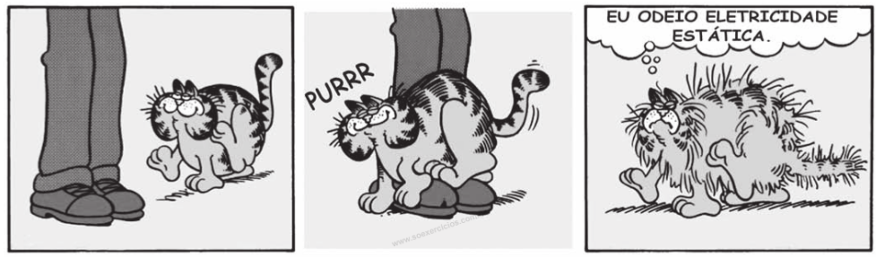

Exercícios
ENEM(2021) 1- O desfibrilador salva vidas de pessoas que são acometidas por ataques cardíacos ou arritmias. Ele dispõe de um capacitor que pode ser carregado por uma fonte com uma alta tensão. Usando o desfibrilador, pode-se fornecer energia ao coração, por meio de um choque elétrico, para que ele volte a pulsar novamente em seu ritmo normal. Um socorrista dispõe de um desfibrilador com capacitor de 70 microfarads que pode armazenar cerca de 220 J de energia, quando conectado a uma tensão de 2 500 V.
O valor da carga armazenada por esse desfibrilador, em coulomb, é de:
(A) 0,015
(B) 0,018
(C) 0,175
(D) 3,15
(E) 11,4
Mostrar resposta
Alternativa correta: Letra C
ENEM(2020) 2- Há muitos mitos em relação a como se proteger de raios, cobrir espelhos e não pegar em facas, garfos e outros objetos metálicos, por exemplo. Mas, de fato, se houver uma tempestade com raios, alguns cuidados são importantes, como evitar ambientes abertos. Um bom abrigo para proteção é o interior de um automóvel, desde que este não seja conversível.
(A) Isolamento elétrico dos pneus.
(B) O Efeito de para-raios da antena.
(C) O Blindagem pela carcaça metálica.
(D) O Escoamento da água pela lataria.
(E) O Aterramento pelo fio terra da bateria.
Mostrar resposta
Alternativa correta: Letra C
ENEM(2020) 3-
Por qual motivo ocorre a eletrização ilustrada na tirinha
(A) Troca de átomos entre a calça e os pelos do gato.
(B) Diminuição do número de prótons nos pelos do gato.
(C) Criação de novas partículas eletrizadas nos pelos do gato.
(D) Movimentação de elétrons entre a calça e os pelos do gato.
(E) Repulsão entre partículas elétricas da calça e dos pelos do gato
Mostrar resposta
Alternativa correta: Letra D
ENEM(2009) 4- Um medicamento, após ser ingerido, atinge a corrente sanguínea e espalha-se pelo organismo, mas, como suas moléculas “não sabem” onde é que está o problema, podem atuar em locais diferentes do local “alvo” e desencadear efeitos além daqueles desejados. Não seria perfeito se as moléculas dos medicamentos soubessem exatamente onde está o problema e fossem apenas até aquele local exercer sua ação? A técnica conhecida como iontoforese, indolor e não invasiva, promete isso. Como mostram as figuras, essa nova técnica baseia-se na aplicação de uma corrente elétrica de baixa intensidade sobre a pele do paciente, permitindo que fármacos permeiem membranas biológicas e alcancem a corrente sanguínea, sem passar pelo estômago. Muitos pacientes relatam apenas um formigamento no local de aplicação. O objetivo da corrente elétrica é formar poros que permitam a passagem do fármaco de interesse. A corrente elétrica é distribuída por eletrodos, positivo e negativo, por meio de uma solução aplicada sobre a pele. Se a molécula do medicamento tiver carga elétrica positiva ou negativa, ao entrar em contato com o eletrodo de carga de mesmo sinal, ela será repelida e forçada a entrar na pele (eletrorrepulsão - A). Se for neutra, a molécula será forçada a entrar na pele juntamente com o fluxo de solvente fisiológico que se forma entre os eletrodos (eletrosmose - B)
De acordo com as informações contidas no texto e nas figuras, o uso da iontoforese:
(A) provoca ferimento na pele do paciente ao serem introduzidos os eletrodos, rompendo o epitélio.
(B) aumenta o risco de estresse nos pacientes, causado pela aplicação da corrente elétrica.
(C) inibe o mecanismo de ação dos medicamentos no tecido-alvo, pois estes passam a entrar por meio da pele.
(D) diminui o efeito colateral dos medicamentos, se comparados com aqueles em que a ingestão se faz por via oral.
(E) deve ser eficaz para medicamentos constituídos de moléculas polares e ineficaz, se essas forem apolares.
Mostrar resposta
Alternativa correta: Letra D
ENEM(2013) 5- Um circuito em série é formado por uma pilha, uma lâmpada incandescente e uma chave interruptora. Ao se ligar a chave, a lâmpada acende quase instantaneamente, irradiando calor e luz. Popularmente, associa-se o fenômeno da Irradiação de energia a um desgaste da corrente elétrica, ao atravessar o filamento da lâmpada, e à rapidez com que a lâmpada começa a brilhar. Essa explicação está em desacordo com o modelo clássico de corrente.
De acordo com o mdelo mencionado, o fato de a lâmpada acender quase instantanemente está relacionado à rapidez com que:
(A) O fluido elétrico se desloca no circuito.
(B) As cargas negativas móveis atravessam o circuito.
(C) A bateria libera cargs móveis para o filamento da lâmpada.
(D) O campo elétrico se estabelece em todos os pontos do circuito.
(E) As cargas positivas e negativas se chocam no filamento da lâmpada
Mostrar resposta
Alternativa correta: Letra D
ENEM(2018) 6- Em uma manhã ensolarada, uma jovem vai até um parque para acampar e ler. Ela monta sua barraca próxima de seu carro, de uma árvore e de um quiosque de madeira. Durante sua leitura, a jovem não percebe a aproximação de uma tempestade com muitos relâmpagos.
A melhor maneira dessa jovem se proteger dos relâmpagos é:
(A) Entrar no carro
(B) Entrar na barraca
(C) Entrar no quiosque
(D) Abrir um guarda-chuva
(E) Ficar embaixo da árvore
Mostrar resposta
Alternativa correta: Letra A
ENEM(2016) 7- Um cosmonauta russo estava a bordo da estação espacial MIR quando um de seus rádios de comunicação quebrou. Ele constatou que dois capacitores do rádio de 3μF e 7μF ligados em série estavam queimados. Em função da disponibilidade, foi preciso substituir os capacitores defeituosos por um único capacitor que cumpria a mesma função.
Qual foi a capacitação, medida em μF, do capacitor utilizado pelo cosmonauta?
(A) 0,10
(B) 0,50
(C) 2,1
(D) 10
(E) 21
Mostrar resposta
Alternativa correta: Letra C
ENEM(2010) 8- Duas irmãs que dividem o mesmo quarto de estudos combinaram de comprar duas caixas com tampas para guardarem seus pertences dentro de suas caixas, evitando, assim, a bagunça sobre a mesa de estudos. Uma delas comprou uma metálica, e a outra, uma caixa de madeira de área e espessura lateral diferentes, para facilitar a identificação. Um dia as meninas foram estudar para a prova de Fı́sica e, ao se acomodarem na mesa de estudos, guardaram seus celulares ligados dentro de suas caixas. Ao longo desse dia, uma delas recebeu ligações telefônicas, enquanto os amigos da outra tentavam ligar e recebiam a mensagem de que o celular estava fora da área de cobertura ou desligado.
Para explicar essa situação, um físico deveria afirmar que o material da caixa, cujo telefone celular não recebeu as ligações é de:
(A) Madeira, e o telefone não funcionava porque a madeira não é um bom condutor de eletricidade.
(B) Metal, e o telefone não funcionava devido à blindagem eletrostática que o metal proporcionava.
(C) Metal, e o telefone não funcionava porque o metal refletia todo tipo de radiação que nele incidia.
(D) Metal, e o telefone não funcionava porque a área lateral da caixa de metal era maior.
(E) Madeira, e o telefone não funcionava porque a espessura desta caixa era maior que a espessura da caixa de metal.
Mostrar resposta
Alternativa correta: Letra B
ENEM(2013) 9- Em uma experiência didática, cinco esferas de metal foram presas em um barbante, de forma que a distância entre esferas consecutivas aumentava em progressão aritmética. O barbante foi suspenso e a primeira esfera ficou em contato com o chão. Olhando o barbante de baixo para cima, as distâncias entre as esferas ficavam cada vez maiores. Quando o barbante foi solto, o som das colisões entre duas esferas consecutivas e o solo foi gerado em intervalos de tempo exatamente iguais.
A razão dos intervalor de tempo citados serem iguais é que a:
(A) velocidade da esfera é constante.
(B) força resultante em cada esfera é constante.
(C) aceleração de cada esfera aumenta com o tempo.
(D) tensão aplicada em cada esfera aumenta com o tempo.
(E) energia mecânica de cada esfera aumenta com o tempo.
Mostrar resposta
Alternativa correta: Letra B
ENEM(2016) 10- Durante a formação de uma tempestade, são observadas várias descargas elétricas, os raios, que podem ocorrer: das nuvens para o solo (descarga descendente), do solo para as nuvens (descarga ascendente) ou entre uma nuvem e outra. As descargas ascendentes e descendentes podem ocorrer por causa do acúmulo de cargas elétricas positivas ou negativas, que induz uma polarização oposta no solo.
(A) campo magnético da Terra
(B) corrente elétrica gerada dentro das nuvens
(C) resistividade elétrica do ar entre as nuvens e o solo
(D) campo elétrico entre as nuvens e a superfície da terra
(E) força eletromotriz induzida nas cargas acumuladas no solo
Mostrar resposta
Alternativa correta: Letra D